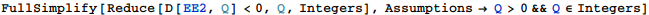

東京大学 1994年 理科 第5問
問題
大量のカードがあり、各々のカードに1,2,3,4,5,6の数字のいずれかの一つが書かれている。これらのかーどから無作為に1枚ひくとき、どの数字のカードをひく確率も正である。さらに、3の数字のカードをひく確率はpであり、1,2,5,6の数字のカードを引く確率はそれぞれqに等しいとする。
これらのカードから1枚を引き、その数字aを記録し、このカードをもとに戻して、もう1枚ひき、その数字をbとする。このときa+b≤4となる事象をA、a<bとなる事象をBとし、それぞれの起こる確率をP(A),P(B)と書く。
(1) E=2P(A)+P(B)とおくとき、Eをp,qで表せ。
(2) とがともに自然数であるとき、Eの値を最大にするようなp,qの値を求めよ。
解答
(1)
kの数字のカードを引く確率を とする。
とする。
事象Aが起こるのは(a,b)=(1,1),(1,2),(1,3),(2,1),(2,2),(3,1)となる場合だから、P(A)は
同様にP(B)は
従ってEは(MathematicaでEは予約されていて使用できないのでEEとして)
(2)
 (P,Qは自然数)とする。4を引く確率が正だから、
(P,Qは自然数)とする。4を引く確率が正だから、
よってQを変化させたときのPの取りうる範囲はそれぞれ
| Q==5 | P≥6 |
| Q==6 | P≥4 |
| Q==7 | P≥3 |
| Q==8 | P≥3 |
| Q==9 | P≥2 |
またはQ≥5で単調減少だから、Q≥10のときはP≥2
一方、EをP,Qで表すと、
であり、これをP,Qで偏微分することを考えると、

であるから、EはQを固定したとき、P≥3でPについて単調減少であり、
またPを固定したときQ≥2でQについて単調減少する。
以上より、2≤P≤6,5≤Q≤9の範囲でEの最大値を探せば、それが求める最大値となる。
最大のものは
従って、のとき最大値。
補足・感想
確率の問題は数式を立てるまでが問題となるため、Mathematicaの活躍の場は狭くなってしまう。